Explícame la inteligencia artificial.
⚜ ORDEN DE LOS SABIOS · EL REINO DE LOS SABERES PERDIDOS
MISIÓN 2 DE 4 · 60 MINUTOS
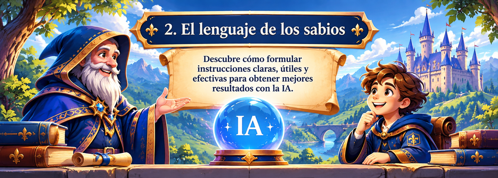
Mensaje del Consejo Real · Segunda misión
El lenguaje de los sabios
Aprendiz, el Oráculo Real puede ofrecer información valiosa, pero necesita recibir instrucciones claras y bien pensadas. Una solicitud imprecisa puede producir una respuesta demasiado general o poco útil.
En esta misión aprenderás a formular prompts: instrucciones que indican a la inteligencia artificial qué necesitas, en qué contexto y cómo esperas recibir la respuesta.
Tu propósito: formular dos instrucciones pertinentes, comparar su claridad y mejorar una incorporando objetivo, contexto y resultado esperado.
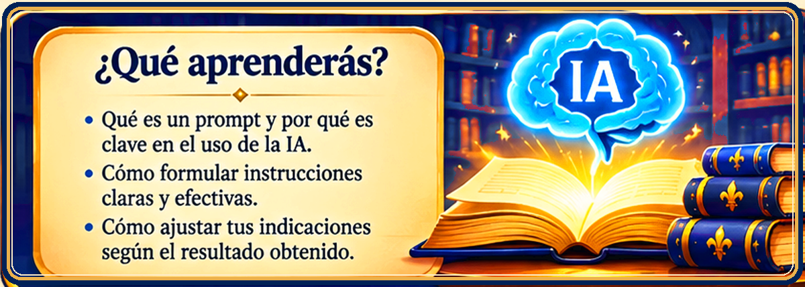
Al finalizar, podrás:
Comprender
Qué es un prompt y por qué orienta las respuestas de la IA.Formular
Instrucciones claras con objetivo, contexto y resultado esperado.Mejorar
Una instrucción a partir del análisis de la respuesta obtenida.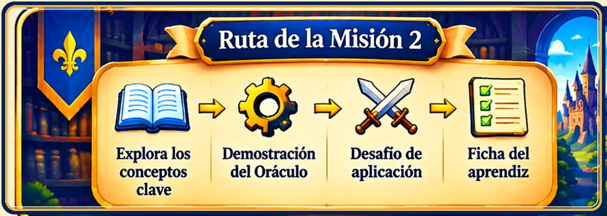
Ruta de la misión
La misión se desarrolla en cuatro momentos: explorar los conceptos, observar la demostración del Oráculo, resolver el desafío de aplicación y registrar los aprendizajes en la ficha.
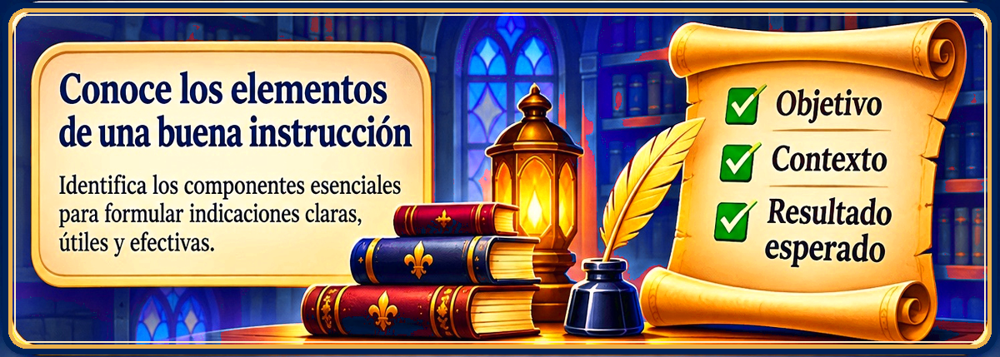
Explora los conceptos clave
Un prompt es una instrucción o solicitud que damos a una herramienta de inteligencia artificial para orientar la respuesta. Para que sea útil, considera estos tres componentes:
1. Objetivo
Explica qué necesitas conseguir o qué tarea debe realizar la IA.2. Contexto
Describe la situación, el tema, el público o las condiciones que debe considerar.3. Resultado esperado
Indica cómo deseas recibir la respuesta: lista, tabla, resumen, pasos, extensión o nivel de detalle.Fórmula orientadora:
Necesito que [objetivo]. Considera este contexto: [contexto]. Presenta el resultado como [formato o características esperadas].
Necesito que [objetivo]. Considera este contexto: [contexto]. Presenta el resultado como [formato o características esperadas].
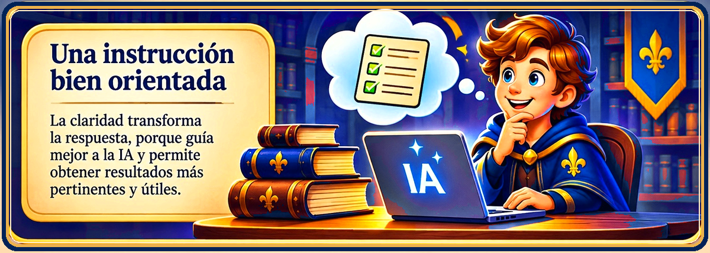
Una instrucción bien orientada
Observa las dos solicitudes. Identifica cuál ofrece más información para orientar la respuesta.
Explica qué es la inteligencia artificial para estudiantes de tercero de secundaria. Incluye tres ejemplos de uso en la vida cotidiana y presenta la información en una lista numerada con una breve explicación de cada ejemplo.
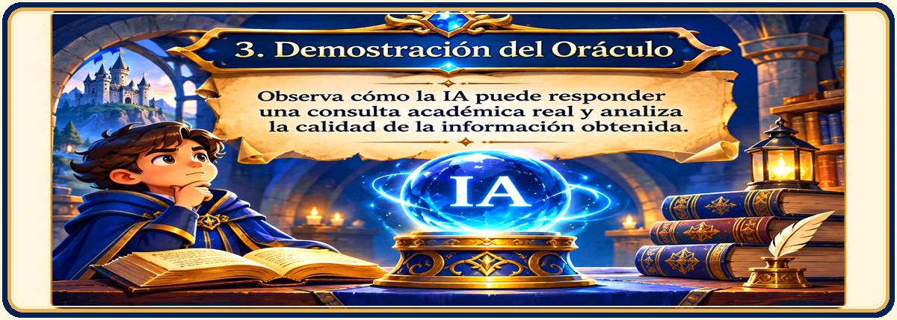
Demostración guiada por el docente
Observa cómo una instrucción clara orienta la respuesta de la inteligencia artificial. El docente mostrará una consulta y analizará contigo si el resultado responde al objetivo, considera el contexto y respeta el formato solicitado.
Consulta de ejemplo: «Explica tres formas en que la inteligencia artificial puede apoyar el estudio de Ciencias. Dirige la explicación a estudiantes de tercero de secundaria y presenta cada forma con un ejemplo breve».
Después de observar la respuesta, identifica qué parte de la instrucción ayudó a obtener información más pertinente y qué podría ajustarse.
Importante: esta página funciona sin conexión y no se conecta a un sistema de IA. El docente gestiona la consulta desde la herramienta que utilice para la demostración. No necesitas crear una cuenta ni ingresar datos personales.
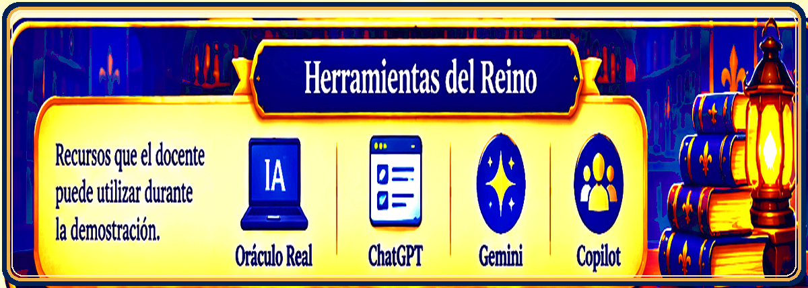
Herramientas para consultar al Oráculo
Durante la demostración, el docente puede utilizar el Oráculo Real o herramientas de inteligencia artificial como ChatGPT, Gemini o Copilot. La selección y el acceso serán gestionados por el docente.
Desafío de aplicación
Ahora te corresponde crear tus propias instrucciones. Completa los campos para construir el primer prompt y luego redacta un segundo prompt sobre otra necesidad académica.
Construye tu primer prompt
Tu primer prompt
Completa los tres campos y pulsa «Construir mi prompt».
Elementos revisados: 0 de 3.
Mejora uno de tus prompts
Selecciona uno de tus prompts y reescríbelo para que sea más claro y completo.
Completa tus dos prompts, la mejora y la justificación.
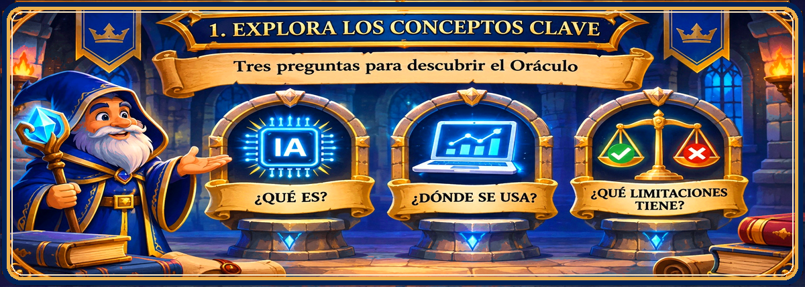
Aplica lo aprendido a una situación académica
Situación: debes preparar una exposición breve sobre el cuidado del agua para tu clase de Ciencia y Tecnología.
Formula una instrucción para solicitar a la IA una explicación apropiada para estudiantes de tercero de secundaria, con tres acciones concretas y un ejemplo cotidiano. Define también cómo deseas organizar la respuesta.
Antes de compartir tu prompt, comprueba que incluya qué necesitas, qué información debe considerar y cómo debe presentar el resultado.
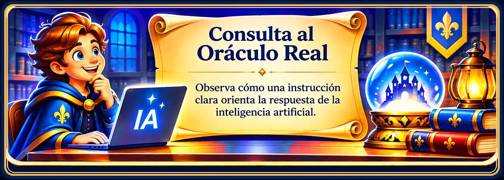
Consulta al Oráculo
Comparte tu versión mejorada con el docente para realizar una demostración acompañada. Observa la respuesta y analiza si cumple con lo que solicitaste.
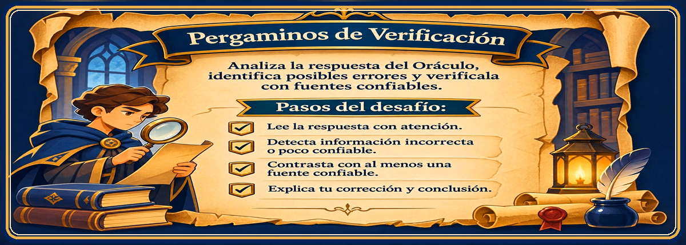
Registra tus hallazgos en la ficha
Completa y revisa la ficha. Esta será la evidencia de tu misión y podrás imprimirla o guardarla como PDF para entregarla al docente.
Orden de los Sabios
Mi colección de instrucciones
Misión 2 · El lenguaje de los sabios
Aún no has construido tu primer prompt.
Aún no has escrito tu segundo prompt.
Aún no has escrito una versión mejorada.
Aún no has escrito tu justificación.
No incluyas contraseñas, direcciones, datos sensibles ni información privada en tus instrucciones.
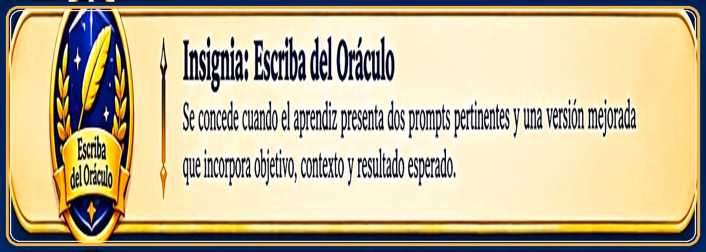
Reconocimiento de la misión
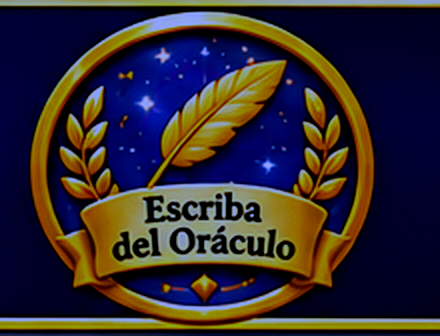
Insignia: Escriba del Oráculo
Se concede cuando el aprendiz presenta dos prompts pertinentes y una versión mejorada que incorpora objetivo, contexto y resultado esperado.
La validación corresponde al docente después de revisar la ficha y la pertinencia de las instrucciones.
Fragmento recuperado: COMUNICACIÓN. Este fragmento se une al conocimiento recuperado en la primera misión y permite avanzar hacia «Los secretos de los pergaminos».
Orientaciones para el docente · distribución de los 60 minutos
- 5 min: presentar la misión y leer el mensaje del Consejo Real.
- 10 min: explicar objetivo, contexto y resultado esperado.
- 10 min: comparar la instrucción imprecisa con la mejorada.
- 15 min: acompañar la elaboración individual de dos prompts.
- 10 min: realizar una demostración guiada con el prompt seleccionado.
- 5 min: mejorar una instrucción y justificar los cambios.
- 5 min: revisar la ficha, ofrecer retroalimentación y validar la insignia.
Criterios de revisión: los dos prompts expresan una necesidad identificable, incluyen contexto suficiente, indican el tipo de respuesta esperada y la versión mejorada incorpora cambios pertinentes que el aprendiz puede justificar.
Funcionamiento: recurso local sin registro ni conexión con servicios externos. La página no califica automáticamente la calidad de las respuestas; la insignia se valida mediante revisión docente.